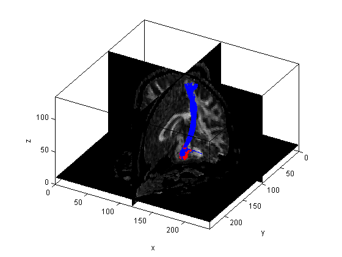

TrackVis/MATLAB Integration Demo
This demo takes you through the basic process of working with TrackVis track group .trk files in MATLAB. The main rationale for these tools is to be able to examine a scalar metric (e.g. FA) parameterized along a track, instead of the typical method of collpasing across the whole track.
Author: John Colby (johncolby@ucla.edu)
UCLA Developmental Cognitive Neuroimaging Group (Sowell Lab)
Contents
Import tracks
Set paths to .trk file and scalar MRI volume (e.g. FA map).
subDir = fullfile(exDir, 'subject1'); trkPath = fullfile(subDir, 'CST_L.trk'); volPath = fullfile(subDir, 'dti_fa.nii.gz');
Read in the scalar MRI volume with FSL tools. (See $FSLDIR/etc/matlab)
volume = read_avw(volPath);
Read in the .trk file. You will get a header structure with fields from the .trk header, and a tracks structure array with an entry for each streamline in the track group.
[header tracks] = trk_read(trkPath)
header =
id_string: 'TRACK '
dim: [192 192 55]
voxel_size: [1.2500 1.2500 2.5000]
origin: [0 0 0]
n_scalars: 0
scalar_name: [10x20 char]
n_properties: 0
property_name: [10x20 char]
reserved: [508x1 char]
voxel_order: 'LPS '
pad2: 'LAS '
image_orientation_patient: [1 0 0 0 -1 0]
pad1: ' '
invert_x: 0
invert_y: 1
invert_z: 0
swap_xy: 0
swap_yz: 0
swap_zx: 0
n_count: 734
version: 2
hdr_size: 1000
tracks =
1x734 struct array with fields:
nPoints
matrix
Each structure in the tracks array contains fields for the number of points in that particular streamline, and the raw matrix of those points in mm coordinates [nPoints x 3]. Coordinate system begins with RPI = 0,0,0.
tracks(1) tracks(1).matrix
ans =
nPoints: 73
matrix: [73x3 double]
ans =
120.6250 105.6250 1.2500
120.7721 105.9612 2.6684
120.9682 106.2587 4.0910
121.3031 106.5639 5.8192
121.6318 106.9971 7.5074
121.8181 107.5721 8.8092
121.9920 108.3112 10.0386
122.5117 109.9120 12.1337
123.0796 111.1412 13.5634
123.6738 112.3017 15.0360
124.0613 113.0783 16.2544
124.4113 113.7492 17.5483
125.1193 114.7262 20.0167
126.0355 115.4616 22.5005
126.4101 115.7442 23.7574
126.7523 116.0492 25.0180
127.5067 116.8137 27.4111
127.9900 117.1731 28.7186
128.5231 117.4263 30.0296
129.0690 117.5639 31.2818
129.6115 117.6561 32.5407
130.6059 117.8519 35.0161
131.1773 117.9335 36.2949
131.8337 118.0222 37.5288
133.4650 118.3249 40.0183
134.2153 118.4990 41.2690
134.9198 118.6486 42.5478
136.2553 118.8378 45.0144
136.9225 118.9425 46.2572
137.4780 118.9970 47.5424
138.1104 118.8869 50.0231
138.7520 118.8163 52.4384
138.9323 118.7187 53.7330
139.0966 118.6013 55.0313
139.7007 118.4477 57.5169
140.2808 118.2536 60.0023
140.5142 118.0227 61.2736
140.6537 117.7097 62.5432
140.6477 117.1479 65.0426
140.7290 117.1086 67.5410
140.8264 116.9999 69.2016
140.8815 116.7976 70.8547
140.8255 116.6089 72.5102
140.6918 116.5078 73.7863
140.5901 116.3328 75.0469
140.6930 115.6511 77.5138
140.7280 115.4406 78.7757
140.7309 115.2679 80.0471
140.6544 114.6499 82.5326
140.3460 113.8356 85.0092
140.2973 113.5430 86.2563
140.2603 113.3605 87.5259
139.9994 113.1862 90.0062
139.8681 113.0137 91.2683
139.7202 112.8022 92.5243
139.3215 112.3603 95.0157
139.1793 111.9912 96.2992
139.0742 111.4951 97.5479
138.7410 110.3988 99.8367
138.3303 109.9597 101.1652
137.8654 109.6872 102.5313
137.5107 109.5348 103.7838
137.1810 109.3936 105.0417
136.4431 109.0172 107.5327
135.6357 108.6820 110.0071
135.1527 108.3932 111.2691
134.7863 108.1077 112.5576
134.7882 107.8826 115.0475
135.3712 107.8759 117.5428
136.1919 107.7962 120.0350
137.0575 107.7355 122.5124
137.2959 107.6668 123.7655
137.4422 107.5756 125.0407
Whole-track statistics
Determine traditional statistics collapsed across the whole track.
[meanInt stdInt nVox] = trk_stats(header, tracks, volume, 'nearest')
meanInt =
0.5863
stdInt =
0.1370
nVox =
1777
Determine the distribution of streamline lengths.
lengths = trk_length(tracks); mean(lengths) std(lengths)
ans = 121.7951 ans = 13.1734
Fit curves
Use cubic spline interpolation to make all tracks have the same number of vertices. The output is in matrix mode.
tracks_interp = trk_interp(tracks, 100);
Reformat the tracks back into a structure form.
tracks_interp_str = trk_restruc(tracks_interp);
Plot the track group. The last input argument indicates the slice planes for volume overlays. Red markers indicate starting points. Note the random ordering of tracks, with some "starting" in the cortex and some in the brainstem.
figure, trk_plot(header, tracks_interp_str, volume, [95 78 4]) view([30 30])

Reorder the tracks so that they all "start" in the same spot. The last input argument here is a coordinate near the desired starting area. If left blank, the origin will be determined interactively.
tracks_interp = trk_flip(header, tracks_interp, [97 110 4]); tracks_interp_str = trk_restruc(tracks_interp);
Plot the results again to see the difference.
figure, trk_plot(header, tracks_interp_str, volume, [95 78 4]) view([30 30])
Extract scalars
For each point along the streamlines in tracks_interp_str, extract the corresponding voxel intensity from volume.
[header_sc tracks_sc] = trk_add_sc(header, tracks_interp_str, volume, 'FA');
Obtain the mean scalar at different points along the track
[scalar_mean scalar_sd] = trk_mean_sc(header_sc, tracks_sc);
Plot results
Plot the mean scalar value (+/- SD) along the track.
figure, hold on plot(scalar_mean, 'k') plot(scalar_mean+scalar_sd, 'k--') plot(scalar_mean-scalar_sd, 'k--') % Make the plot prettier hold off, box off xlim([0 100]), ylim([0 1]) title('\bf{Mean FA along track}') xlabel('Distance along track (%)') ylabel('Fractional Anisotropy (FA)')

Export tracks
The mean streamline geometry can also be calculated.
track_mean = mean(tracks_interp, 3);
This can be packaged up with the mean scalar values. Multiple scalars can be added, and can even include statistical significance values. A dummy streamline should be added with the desired display ranges for the scalars, if these exceed the ranges in the data.
track_mean_sc = [track_mean scalar_mean]; % x y z sc1 track_mean_sc(1:2,:,2) = [0 0 0 0; %min 0 0 0.1 1]; %max track_mean_sc_str = trk_restruc(track_mean_sc);
Don't forget to update the header because now we only have 1 streamline instead of many (plus the 1 dummy streamline).
header_mean_sc = header_sc; header_mean_sc.n_count = 2;
Save the result back out to a .trk file for visualization in TrackVis.
savePath = fullfile(exDir, 'CST_L_mean.trk');
trk_write(header_mean_sc, track_mean_sc_str, savePath)

Help
To get more help for any of these functions, simply type help function_name at the command prompt.
help trk_stats
TRK_STATS - Compute intensity statistics about a volume within a track group
Use this function to extract the mean/etc. of a scalar MRI volume within a
select track group of interest. For instance, you could calculate the mean
FA within the left corticospinal tract.
Syntax: [meanInt,stdInt,nVox] = trk_stats(header,tracks,volume,method)
Inputs:
header - Header information from .trk file [struc]
tracks - Track data struc array [1 x nTracks]
volume - Scalar MRI volume
method - Method to use for extracting intensities from the MRI volume
quick - Extract intensities directly. This uses linear indexing to
avoid a for loop and is ~ 5x faster than the higher-level
nearest neighbor version below.
nearest - Nearest neighbor interpolation. Should be equivalent to direct
lookup.
cubic - Cubic interpolation instead of direct voxel lookup.
Outputs:
meanInt - Mean image volume intensity (e.g. FA) along a track group
stdInt - Standard deviation of these intensities
nVox - Number of unique voxels traversed by the track group
Example:
[header tracks] = trk_read(trkPath);
volume = read_avw(volPath);
[meanInt stdInt nVox] = trk_stats(header, tracks, volume, 'quick')
Other m-files required: trk_restruc
Subfunctions: none
MAT-files required: none
See also: TRK_READ, READ_AVW